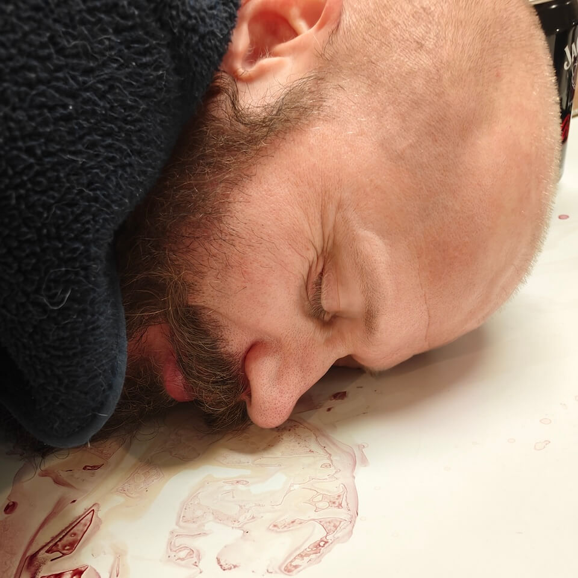
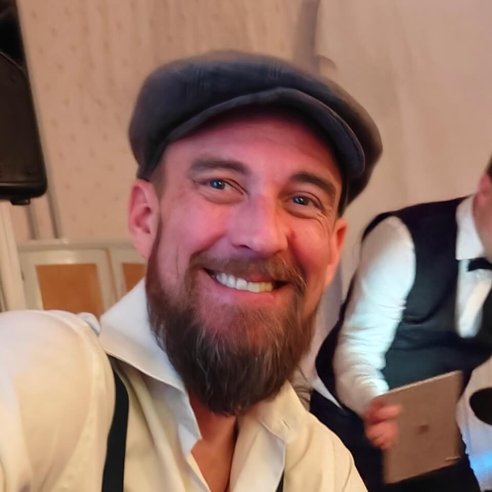
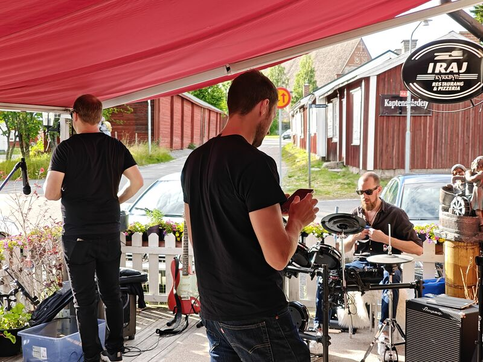
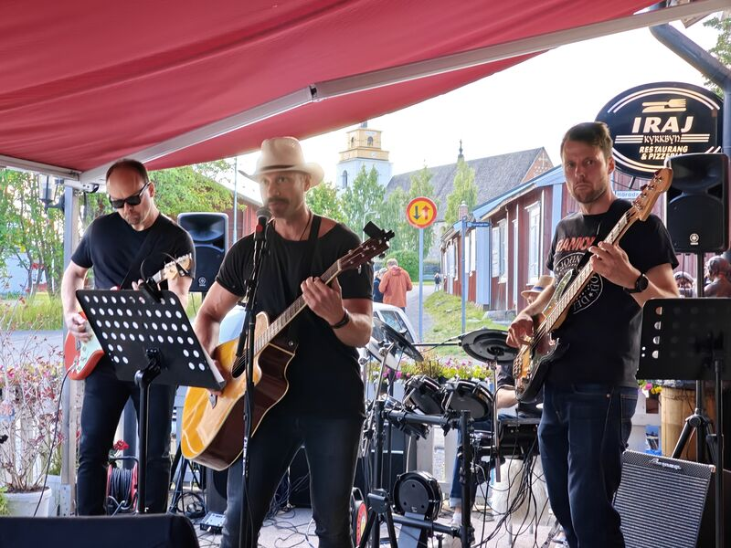
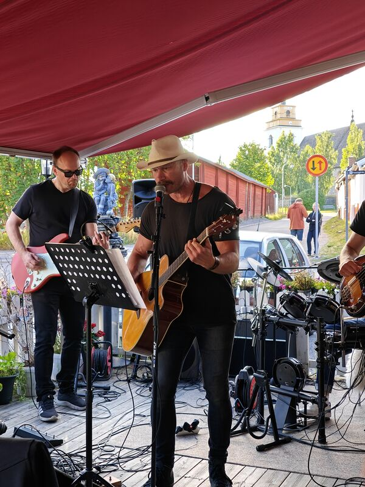
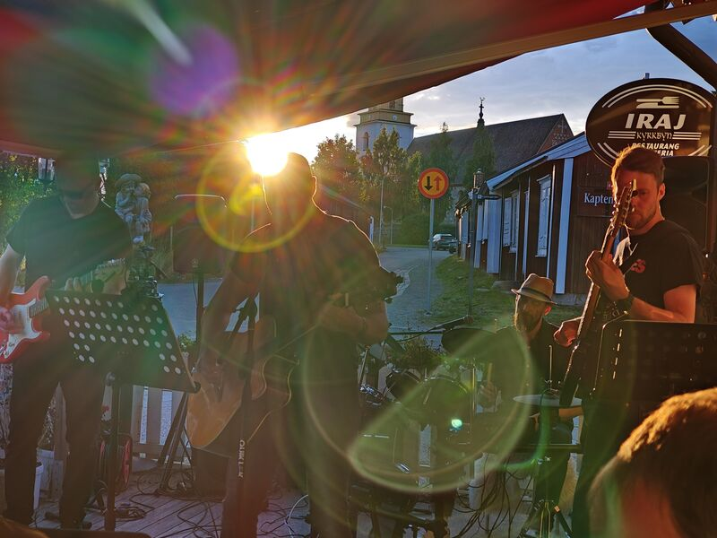

Om oss
Ex anim do dolore dolor occaecat deserunt nostrud aliqua. Cupidatat enim labore elit consectetur quis tempor et eiusmod non excepteur deserunt eu incididunt proident.
Bandet

Henrik Hmm
Sång, akustisk gitarr
Duis laborum id qui voluptate est elit elit eiusmod

Magnus Rubenson
Trummor
Minim eu deserunt reprehenderit in Lorem nulla mollit sint dolore
Anton Olason
Bas
Ad eiusmod aliqua aute in eiusmod mollit non mollit proident
Peter Hmm
Elgitarr
Elit aliqua pariatur deserunt proident dolore sint
Kontakt
Ad laborum ipsum duis sint tempor ipsum.
[FORM_EMBED_SCRIPT]
Galleri



